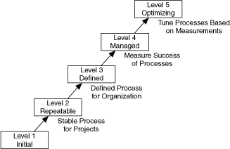

As software becomes a more critical component in systems, concerns about software quality increase. Consequently, a number of organizations have developed quality standards that are specific to software or that can be applied to software. When developing software for some large organizations, especially government organizations, consider using one of the following most recognized standards. Several third-party resources contain more information about these standards.
The International Organization for Standardization (ISO) developed the ISO 9000 family of standards for quality management and assurance. Many countries adopted these standards. In some cases, government agencies require compliance with this ISO standard. A third-party auditor generally certifies compliance. The ISO 9000 family of standards is used widely within Europe and Asia. It has not been widely adopted within the United States, although many companies and some government agencies are beginning to use it.
ISO 9000 is an introduction to the ISO family of standards. ISO 9001 is a model for quality assurance in design, development, production, installation, and servicing. Its focus on design and development makes it the most appropriate standard for software products.
Because the ISO 9000 family is designed to apply to any industry, it is somewhat difficult to apply to software development. ISO 9000.3 is a set of guidelines designed to explain how to apply ISO 9001 specifically to software development.
ISO 9001 does not dictate software development procedures. Instead, it requires documentation of development procedures and adherence to the standards you set. Conformance with ISO 9001 does not guarantee quality. Instead, the idea behind ISO 9001 is that companies that emphasize quality and follow documented practices produce higher quality products than companies that do not.
Refer to the ISO website for information on the latest updates to the ISO 9000 family of standards.
The U.S. Food and Drug Administration (FDA) requires all software used in medical applications to meet its Current Good Manufacturing Practices (CGMP). One of the goals of the standard is to make it as consistent as possible with ISO 9001 and a supplement to ISO 9001, ISO/CD 13485. These FDA standards are largely consistent with ISO 9001, but there are some differences. Specifically, the FDA did not think ISO 9001 was specific enough about certain requirements, so the FDA clearly outlined them in its rules.
Refer to the FDA website for more information about the CGMP rules and how they compare to ISO 9001.
The Software Engineering Institute (SEI) developed the Capability Maturity Model Integration (CMMI) as a model for software quality. The CMMI focuses on improving the maturity of the processes of an organization.
Whereas ISO establishes only two levels of conformance, pass or fail, the CMMI appraises an organization and ranks it into one of five categories.
The following illustration shows the five levels of the CMMI and the processes necessary for advancement to the next level.

Refer to the CMMI Institute website for more information about the latest release of CMMI.
IEEE defined a number of standards for software engineering. IEEE Standard 730, first published in 1980, is a standard for software quality assurance plans. This standard serves as a foundation for several other IEEE standards and gives a brief description of the minimum requirements for a quality plan in many areas, such as purpose, reference documents, standards, problem reporting, and code control.
As with the ISO standards, IEEE 730 is fairly short. It does not dictate how to meet the requirements but requires documentation for these practices to a specified minimum level of detail.
In addition to IEEE 730, several other IEEE standards related to software engineering exist, including the following:
Your projects might be required to meet some or all these standards. Even if you are not required to develop to any of these specifications, they can be helpful in developing your own requirements, specifications, and quality plans.
Refer to the IEEE website for more information about software engineering standards.